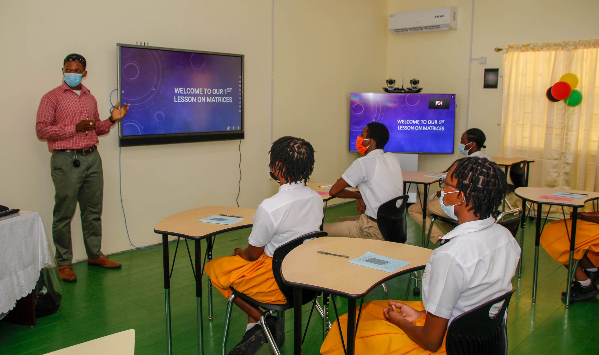
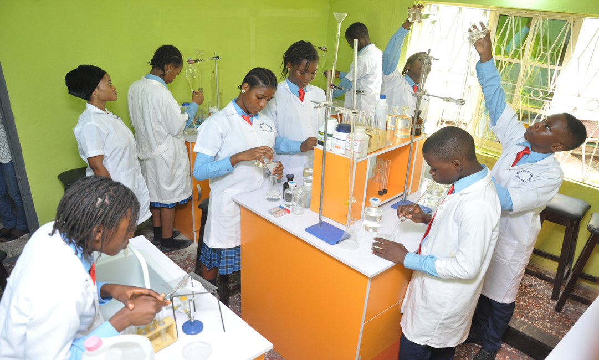
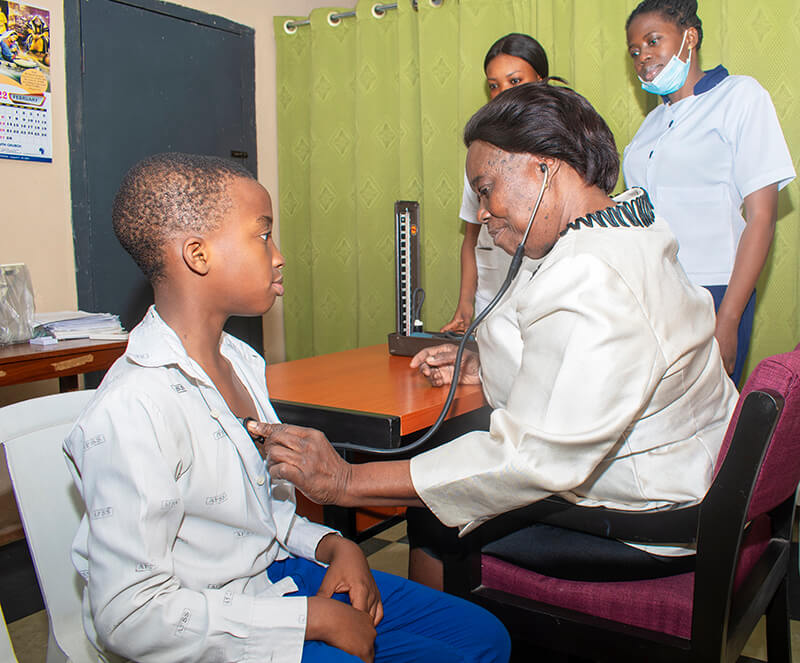
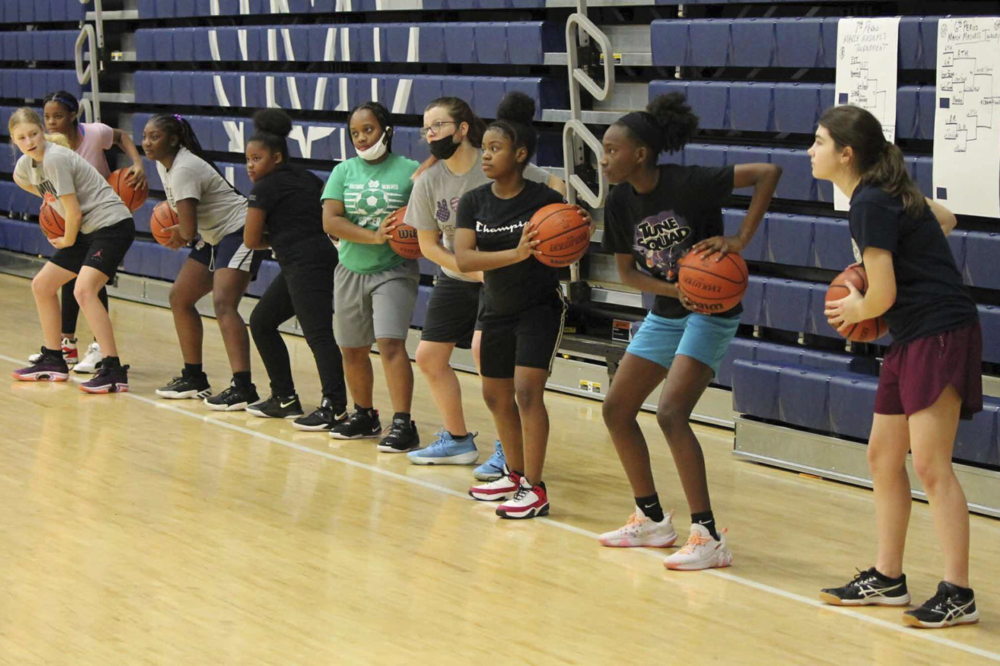

-Classroom-
Bright, airy and spacious,
the classrooms at MadeUp school are designed keeping mind
the needs of the students at various age groups.
The student to teacher ensures personalized
attention and necessary support to enhance the
potential of every learner. We also provide locker facilities.
The classrooms are also equipped with modern
technology that helps in engaging students with
interactive & interesting approach to academics.

-Laboratories-
Well-equipped laboratories of international
standards for Physics, Chemistry and Biology
as well as Computer Studies are on campus to
facilitate practical learning.
Laboratory experiences may help students learn to address
the challenges inherent in directly observing and manipulating
the material world, including troubleshooting equipment used to make
observations, understanding measurement error,
and interpreting and aggregating the
resulting data. Developing practical skills.

-Medical services-
Complete healthcare facilities with a
full-fledged infirmary with 10 beds, consultation room,
separate wards for boys and girls exist on campus.
Full time physician, staff nurses and nursing attendant are on call 24 x7 to
ensure that all emergencies are treated with utmost care and attention.
In case of special cases the students are immediately
referred to a leading hospital nearest Hospital.
The school also has an ambulance available 24 x 7.
Adequate access to certain health benefits may pose
a problem for disadvantaged families seeking help, but
having services readily accessible via a school-based health
center could change that. These types of centers are positioned in or
adjacent to a school and offer integrated medical, behavioral health,
and other health-related services such as dental care.

-Sports-
With sports and games hour allotted every day,
the students are encouraged to engage in
a variety of activities to inculcate the importance of discipline,
team spirit and fitness.
Organized sports participation may aid in the development
of physical skills, such as hand-eye coordination; functional movement
skills and strength; and academic, self-regulatory,
and general life skills. It also may have positive
social benefits, leading to both improved social identity and social adjustment.
You can improve your abilities and confidence by working
toward specific goals while engaging in regular training. This is particularly
noticeable in competitions and games where you and your
teammates test your abilities. Over time, small, gradual
successes can increase personal confidence, enabling you to take
on new tasks and initiatives at work using your newly found assurance.
in your skills.